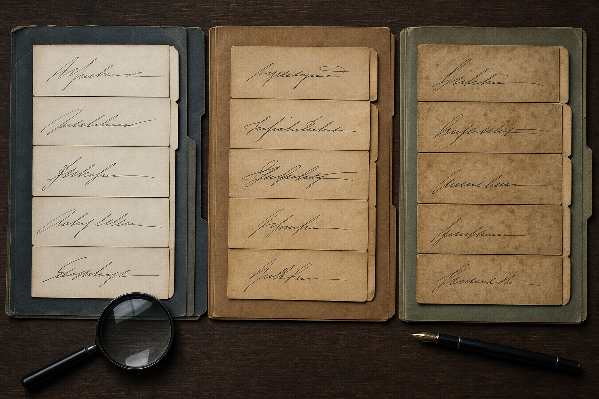
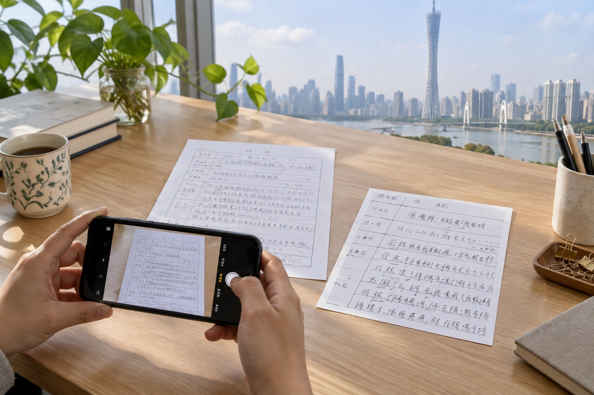
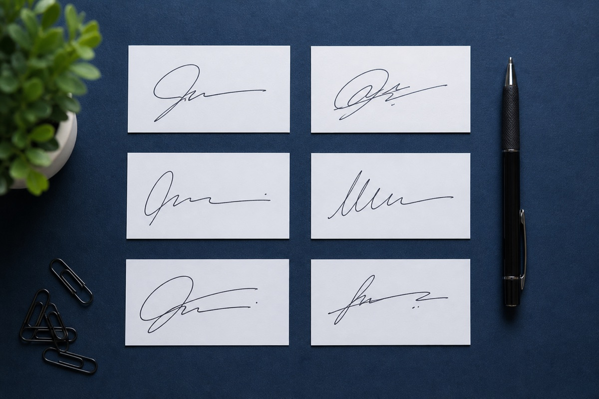
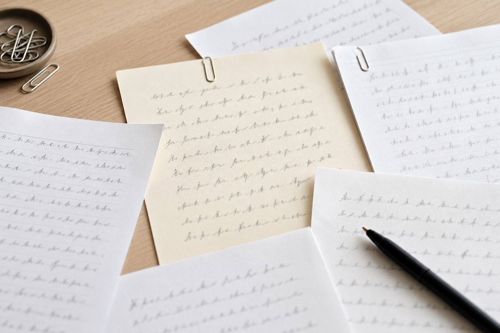

广州模仿签名样本，正式落款和日常签字要分开吗？
正式落款、日常签字和快速登记的书写节奏不同。广州站说明模仿签名、模仿签字与笔迹鉴定资料怎样按场景排列。

正式落款、日常签字和快速登记的书写节奏不同。广州站说明模仿签名、模仿签字与笔迹鉴定资料怎样按场景排列。
签收单、备注和连续正文的书写速度不同，分组后再看相同字更符合实际场景。本文从广州实际资料整理角度说明页面、版本与原图的保存方法。
粗细不同的笔尖会改变线条边缘和转折观感，纸张与工具信息应随样本一起保留。本文从广州实际资料整理角度说明页面、版本与原图的保存方法。

四个纸角能交代页面比例和拍摄方向，近照则作为补充，两种图片不能互相替代。本文从广州实际资料整理角度说明页面、版本与原图的保存方法。
广州站手机拍摄手写文件补充光线与角度说明，围绕广州模仿笔迹、模仿签名、模仿签字和笔迹鉴定更新服务资料。

广州模仿签名样本怎样按场景选择？模仿签字版本说明，围绕广州模仿笔迹、模仿签名、模仿签字和笔迹鉴定介绍资料准备方法。
围绕模仿笔迹、模仿签名、模仿签字和笔迹鉴定整理实用资料。

介绍服务内容、样本要求、价格因素和办理流程。
介绍签名服务范围、签字样本要求、费用与周期。
介绍笔迹鉴定范围、对比材料、费用周期和常见问题。
介绍手写文件、个人字体、字符数量和交付方式。